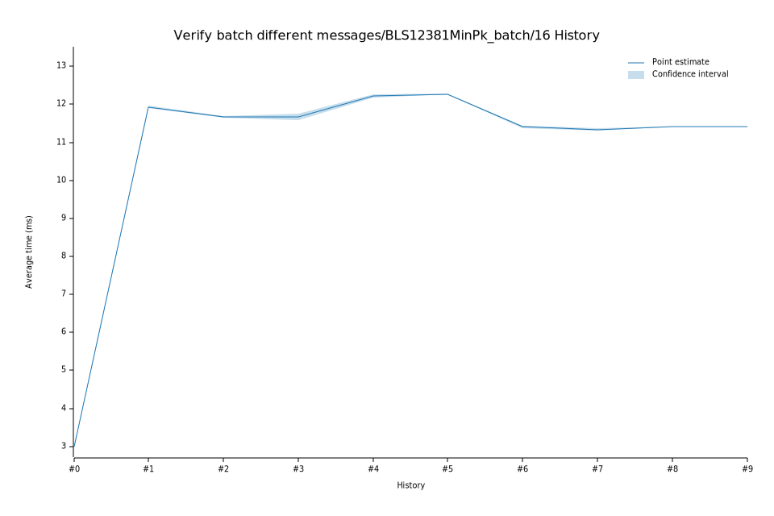

# 52023-02-13T20:44:43Z
|
Lower Bound |
Estimate |
Upper Bound |
| Value: |
12.27ms |
12.27ms |
12.28ms |
| Change in Value: |
+0.2230% |
+0.5340% |
+0.8698% |
No change in performance detected.
# 42023-02-09T12:51:44Z
|
Lower Bound |
Estimate |
Upper Bound |
| Value: |
12.18ms |
12.22ms |
12.27ms |
| Change in Value: |
+4.4055% |
+5.0254% |
+5.5640% |
No change in performance detected.
# 32023-02-08T18:59:48Z
|
Lower Bound |
Estimate |
Upper Bound |
| Value: |
11.59ms |
11.66ms |
11.75ms |
| Change in Value: |
-1.1675% |
-0.6129% |
+0.0366% |
Change within noise threshold.
# 22022-12-05T08:48:14Z
|
Lower Bound |
Estimate |
Upper Bound |
| Value: |
11.64ms |
11.67ms |
11.70ms |
| Change in Value: |
-2.4643% |
-1.9785% |
-1.4574% |
No change in performance detected.
# 12022-11-14T12:02:02Z
|
Lower Bound |
Estimate |
Upper Bound |
| Value: |
11.90ms |
11.93ms |
11.97ms |
| Change in Value: |
+295.09% |
+298.04% |
+300.84% |
No change in performance detected.
# 02022-11-04T13:40:12Z
|
Lower Bound |
Estimate |
Upper Bound |
| Value: |
2.98ms |
3.00ms |
3.02ms |